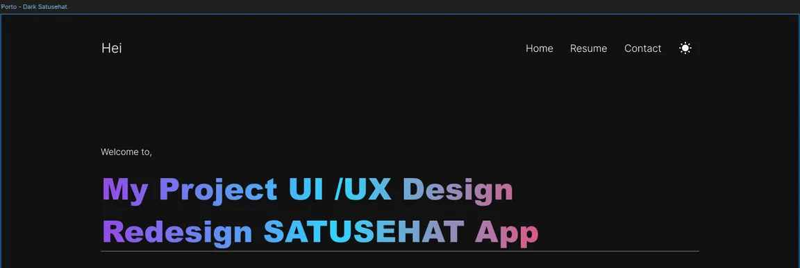
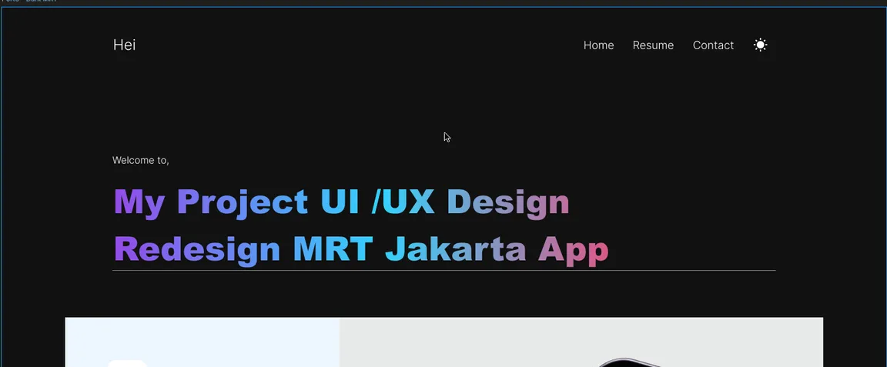
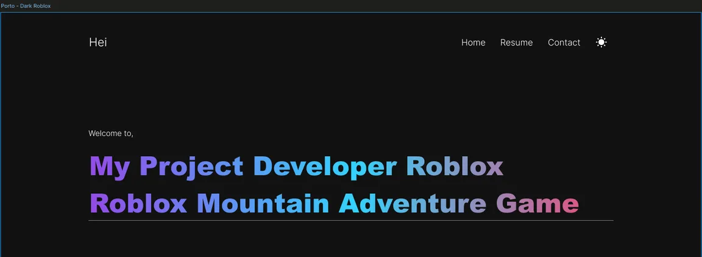
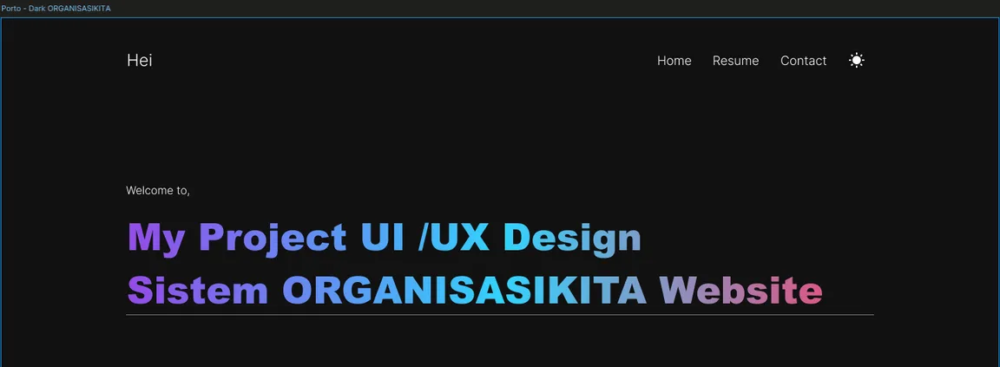

Kirax Spoof
Aplikasi Desktop
Aplikasi untuk menukar asset di Roblox Studio — animasi, suara, decal, mesh, dan video — dari satu tempat, tanpa bolak-balik membuka banyak jendela. Dibangun dengan Tauri, Rust, dan React, lengkap dengan auto-update dan antarmuka 4 bahasa.
- Fork dan rebrand penuh dari ISpooferMotion V2 (GPL-3.0, kredit kreator asli dipertahankan)
- Plugin pendamping untuk Roblox Studio: KiraxSpoof.rbxmx
- Rilis publik di GitHub dengan nama package
kiraxspoof
Rust · TypeScript · React · Tauri · Vite
Buka repository →

Redesign Aplikasi SATUSEHAT
Studi Kasus UI/UX
Studi kasus lengkap perancangan ulang aplikasi kesehatan nasional Kemenkes RI (dulu PeduliLindungi): mengurai alur verifikasi sertifikat vaksin, integrasi rekam medis antar faskes, dan komponen visual berkontras tinggi yang inklusif untuk semua usia — termasuk lansia.
- Proses penuh: riset & pain points, user persona, user journey map, information architecture, user flow, sampai design system (warna, tipografi Inter, komponen)
- A/B testing dua flow dan usability testing dengan 5 responden pengguna aktif
- Hasil: skor System Usability Scale (SUS) naik dari 62 ke 84/100
Figma · Design Thinking · Accessibility Audit WCAG · Usability Testing

Redesign Aplikasi MRT Jakarta
Studi Kasus UI/UX
Perancangan ulang aplikasi MRTJ dengan metode Design Thinking: mengatasi antrean pembelian tiket dan peta rute yang sulit dibaca, menyederhanakan alur transaksi sampai tuntas.
- Generator QR Ticket langsung di home screen + widget kedatangan kereta real-time
- Waktu pembelian tiket terpangkas 40% dalam sesi usability testing
Figma · Heuristic Evaluation · Design System · Usability Testing

Roblox Mountain Adventure
Game
Game petualangan pendakian gunung di Roblox yang saya rancang dan kembangkan sendiri dari konsep sampai rilis: mekanik gameplay pendakian, arsitektur kode Luau berorientasi objek (OOP), dan sistem inventory berbasis DataStore.
- 156.000+ kunjungan pemain dengan rating positif 87%
- Optimasi performa 60 FPS untuk pemain mobile
Roblox Studio · Luau · DataStore · Game Design

Website Organisasikita
Studi Kasus UI/UX
Platform web untuk organisasi kemahasiswaan: pencatatan poin keaktifan, kepanitiaan, rekrutmen keanggotaan, dan pengelolaan timeline program kerja — dengan perancangan database relasional terstruktur dan UI yang transparan untuk semua anggota.
Sistem Informasi · Database Architecture · Responsive UI/UX
Game Desktop
PLANT CARE
Simulasi merawat tanaman
Game Plant Care
Game
Aplikasi game desktop simulasi merawat tanaman: pemain menyiram dan memberi pupuk untuk menaikkan level tanamannya. Saya merancang desain aplikasi, logika permainan, dan melakukan testing fungsionalitasnya.
Desktop App · Game Design · UI Design
Pembuat Twibbon
Tools
Pasang foto ke frame twibbon langsung di browser: pilih frame bawaan (merah putih, ulang tahun, wisuda) atau upload frame PNG dari panitia, geser dan zoom foto sampai pas, lalu unduh PNG 1080×1080. Tanpa watermark.
JavaScript · Canvas API
Kalkulator Weton
Kalkulator
Cek weton Jawa dari tanggal lahir: hari + pasaran, neptu, watak menurut primbon, umur detail sampai ke hari, total hari hidup, zodiak, dan hitung mundur ulang tahun berikutnya. Jangkarnya hari Proklamasi: Jumat Legi.
JavaScript
Kalkulator Gaji Bersih
Kalkulator
Hitung take home pay karyawan Indonesia: potongan BPJS Kesehatan dan Ketenagakerjaan, PPh 21 untuk 8 status PTKP, rincian tahunan yang transparan (biaya jabatan, PKP, pajak setahun), plus pajak THR.
JavaScript
Generator README
DevTools
Bikin README.md GitHub dalam semenit: isi form nama proyek, fitur, dan teknologi — keluar markdown rapi dengan pratinjau langsung ala GitHub, tombol salin, dan unduh file jadi.
JavaScript
Data Dummy Indonesia
DevTools
Generator data fiktif khas Indonesia buat testing aplikasi: nama, email, nomor HP, alamat RT/RW, kota, pekerjaan, perusahaan. Sampai 1.000 baris, ekspor JSON atau CSV.
JavaScript
Cek Nomor HP
Tools
Tempel nomor asing yang nelpon: formatnya dibereskan ke +62, operatornya dikenali (Telkomsel, Indosat, XL, Tri, Smartfren), lalu cek pemiliknya lewat WhatsApp, Truecaller, dan Google sekali klik.
JavaScript
kirax-AI
Eksperimen
Proyek eksperimen JavaScript untuk mencoba ide-ide AI secara langsung: prototipe cepat, diuji, lalu dipelajari hasilnya. Tempat saya mengasah JavaScript modern di luar proyek utama.
JavaScript
Catatan Pengeluaran
Web App
Aplikasi web untuk mencatat pemasukan dan pengeluaran harian: saldo dan total dihitung otomatis dalam Rupiah, riwayat bisa difilter per kategori, ada ringkasan pengeluaran per kategori, dan data tersimpan di browser (localStorage) tanpa server.
HTML · CSS · JavaScript · localStorage
Dashboard Cuaca
Web App
Dashboard cuaca real-time untuk kota mana pun di dunia, memakai API Open-Meteo yang gratis tanpa API key: cuaca saat ini, kelembapan, angin, plus prakiraan 7 hari dengan peluang hujan. Kode cuaca diterjemahkan ke Bahasa Indonesia.
JavaScript · Fetch API · Open-Meteo
Landing Page Kedai Kopi
Landing Page
Contoh landing page untuk UMKM kedai kopi "Kopi Senja": menu interaktif dengan keranjang belanja, total harga otomatis, dan tombol pesan yang menyusun pesanan langsung ke WhatsApp. Template siap diganti nama, menu, dan nomor kedai asli.
HTML · CSS · JavaScript
Kalkulator Impian
Kalkulator Viral
Kalkulator "kapan impianmu kebeli": pilih target dari iPhone sampai DP rumah, isi tabungan per bulan, dan hasilnya keluar sebagai kartu gambar PNG siap dibagikan ke story, lengkap dengan tombol share WhatsApp dan komentar hasil yang jujur.
JavaScript · Canvas API
TikTok Downloader
Tools
Download video TikTok tanpa watermark: paste link, pilih kualitas HD atau standar, bisa juga ambil foto slideshow satu-satu dan audionya sebagai MP3. Tanpa install aplikasi, tanpa iklan pop-up.
JavaScript · Fetch API · TikWM API
Kompres Gambar
Tools
Kecilkan ukuran foto dan convert antar format JPG, PNG, dan WebP. Semua proses jalan lokal di browser pakai Canvas — file tidak pernah di-upload ke server mana pun, jadi aman buat gambar pribadi.
JavaScript · Canvas API
PDF Tools
Tools
Tiga alat PDF dalam satu halaman: gabungkan banyak PDF jadi satu, ambil halaman tertentu saja, dan ubah halaman PDF jadi gambar PNG. Diproses lokal di browser, file tidak ninggalin perangkat.
JavaScript · pdf-lib · PDF.js
QR Generator
Tools
Bikin kode QR dari teks atau link, plus mode WiFi: tamu tinggal scan buat nyambung, tidak perlu dikte password. Warna dan ukuran bisa diatur, hasilnya diunduh sebagai PNG.
JavaScript · Canvas API
Screenshot Beautifier
Tools
Percantik screenshot sebelum diposting: kasih latar gradient, padding, sudut membulat, dan bayangan, lalu export sebagai PNG resolusi penuh. Cocok buat portofolio dan postingan media sosial.
JavaScript · Canvas API
DevTools Suite
DevTools
Lima alat kecil yang sering dicari developer: formatter JSON, encoder/decoder Base64, generator UUID, generator password dengan indikator kekuatan, dan konverter timestamp Unix. Semua dalam satu halaman.
JavaScript
Catatan Markdown
Web App
Aplikasi catatan dengan editor Markdown dan pratinjau langsung berdampingan. Catatan tersimpan otomatis di browser, bisa diunduh sebagai file .md atau disalin sebagai HTML.
JavaScript · marked · localStorage
Meme Generator
Tools
Bikin meme langsung di browser: upload gambar, tulis teks atas dan bawah gaya meme klasik, atur ukuran dan outline, lalu download sebagai PNG. Tanpa watermark, tanpa daftar.
JavaScript · Canvas API
Tes Kecepatan Ngetik
Game
Ukur kecepatan mengetik dalam Bahasa Indonesia: mode 30/60 detik, skor WPM dan akurasi langsung, verdict lucu di akhir, dan kartu hasil PNG yang bisa dibagikan ke story.
JavaScript · Canvas API
Spin Wheel
Tools
Roda pengacak nama buat giveaway, arisan, atau milih siapa yang traktir. Isi daftar nama, putar rodanya, pemenang diumumkan dengan confetti dan bisa langsung dihapus dari daftar.
JavaScript · Canvas API · WebAudio
YouTube Thumbnail Downloader
Tools
Ambil thumbnail video YouTube dalam semua ukuran sampai 1280×720. Paste link video, shorts, atau live — ID video dikenali otomatis dan resolusi yang tidak tersedia ditandai sendiri.
JavaScript · Fetch API
Konverter Mata Uang
Tools
Konversi 12 mata uang dengan kurs live yang diperbarui harian, termasuk Rupiah. Ada tombol tukar arah, chip pasangan populer, dan keterangan tanggal kurs biar tidak salah pakai angka lama.
JavaScript · Fetch API · ExchangeRate API
Pembuat Link WhatsApp
Tools
Bikin link wa.me dengan pesan yang sudah terisi otomatis — nomor 08 langsung diubah ke format internasional. Dilengkapi template pesan buat tanya produk, order, dan booking, plus pratinjau chat.
JavaScript
Kalkulator KPR
Kalkulator
Simulasi cicilan rumah: isi harga properti, uang muka, bunga, dan tenor — keluar cicilan per bulan, total bunga, dan tabel rincian pokok vs bunga per tahun sampai lunas.
JavaScript
Color Palette Generator
DevTools
Generator palet warna harmonis: pencet spasi buat palet baru, kunci warna yang disuka, salin kode HEX satu-satu atau sebagai variabel CSS. Riwayat palet tersimpan di browser.
JavaScript · localStorage
Website Portofolio
Web
Situs yang sedang Anda baca. HTML dan CSS murni tanpa framework dan tanpa build step — ringan, cepat dimuat, dan mudah dirawat. Sengaja dibuat sederhana: isinya yang bicara, bukan efeknya.
HTML · CSS · JavaScript
Buka repository →